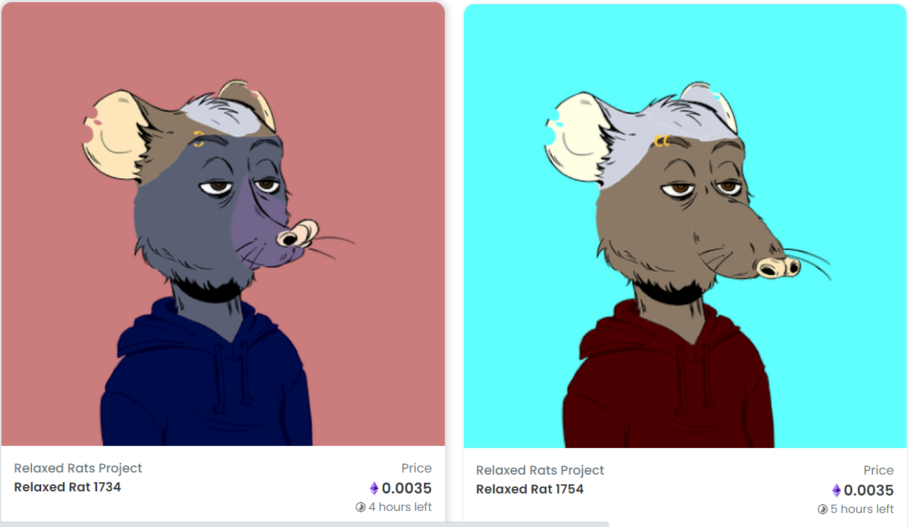

Az NFT (nem felcserélhető token) nem csak egy spekulációs játék!
A technológiából, az okosszerződésből és a grafikus képekből sokkal többet ki lehet hozni.
Egyszerre érvényesülhet az okosszerződés nyújtotta információbiztonság, a grafikai képek vizuális élménye és a közösségek innovatív működtetése.
Hozzuk létre együtt az ország első NFT clubját!
Minden NFT egy egyedi kódsor, korlátozott számban, részekre nem felosztható formában hozzákapcsolódik egy egyedi digitális fájlhoz.... Építsd ki a kiválasztott grafikával az NFT és a hozzátartozó okosszerződés segítségével a zárt körű társaságodat és emeld új szintre a club-élményt - a Virtual Club Service támogatásával.Ha Ön egy közösség vagy club irányítója és a legmodernebb stílusban, de mégis egyszerűen de biztonságosan akarja azt működtetni, akkor az NFT clubbal szintet léphet.
Az NFT club-ba csak azok léphetnek, akik megvásárolták a kollekció egyik darabját, ezt az okosszerződés garantálja. A tagok azonnal értesülhetnek a club legújabb híreiről, kapcsolatot tarthatnak más clubtagokkal, extra tartalmakhoz férhetnek hozzá.
Miért jó NFT-club szervezőjének lenni?
- Újszerű, stílusos, kényelmes megoldás
- Új lehetőséget nyílik a club kapcsolattartására és tartalmak hozzáféréséhez
- Személyre szabott előjogokat biztosíthat a tagoknak a szervező
- Egyszerre biztosít exkluzív tartalmat és befektetési lehetőséget
- Nagy felhajtást és sok figyelmet vonz a médiában („első NFT club”)
- Megkülönböztetést ad a versenytársaktól
- Korszerűség képét szolgáltatja a brand-hez
Miért jó az NFT-klub tagjának lenni?
- Csábító kiváltságok
- FOMO érzet
- Státuszszimbólum
- Színvonalas brand-hez tartozás
- Befektetés (másodpiacon értékesíthető a későbbiekben)
Ha NFT club szervezőjeként igénybe veszed a VCS szolgáltatását, akkor 300 darab arculatodhoz tökéletesen passzoló NFT-t kapsz, amelynek kiváltságait, árát, grafikai jellemzőit te szabod meg.
Mire jó az NFT?

A VCS szolgáltatását két formában választhatod:
- 800.000 Ft teljes díj kifizetéséért
amely magába foglalja a 300 képet, annak tokenizálását és értékesíthetőségét - 400.000 Ft + IPO 15%
(lehetséges bevétel, ha 150.000 Ft egy NFT)300 150 000 45 000 000
Indítsd te az első NFT club-ot Magyarországon!
Rólunk
Egy csapat innovatív fiatal, akik összekapcsoljuk a szakterületeinket (jog, programozás, grafika, információ biztonság).
A NFT club elindításának lépései:
- Az igénylő által megálmodott dizájnt és víziót a grafikusunk elkészíti, az egyeztetések finomhangolását követően bekerülnek a képek a VCS informatikai programjába, kialakítva a 300 darab egyedi képet.
- Az NFT értékesíthető az Opensea platformon vagy saját weboldalon
- Az NFT árazásában és kiváltságok kitalálásában az igénylő teljesmértékben szabadon dönt. A grafikusunk kézzel készített, minimalista, elegáns, letisztult rajzaival kezdődik a munka. A képek bekerülnek az általunk elkészített informatikai programba, ahol elkészül a 300 darab teljesen egyedi képből álló kollekció. Az NFT rendszerében, az okosszerződésekhez rendelve, az egyedi képek tokenizálása garantálja, hogy a képek együtt mozogjanak a tulajdoni jogukkal, valamint a club nyújtotta kiváltságokkal.
Korábbi referencia munkánk: Relaxed Rats Project
